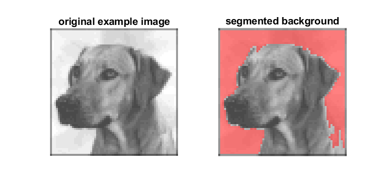
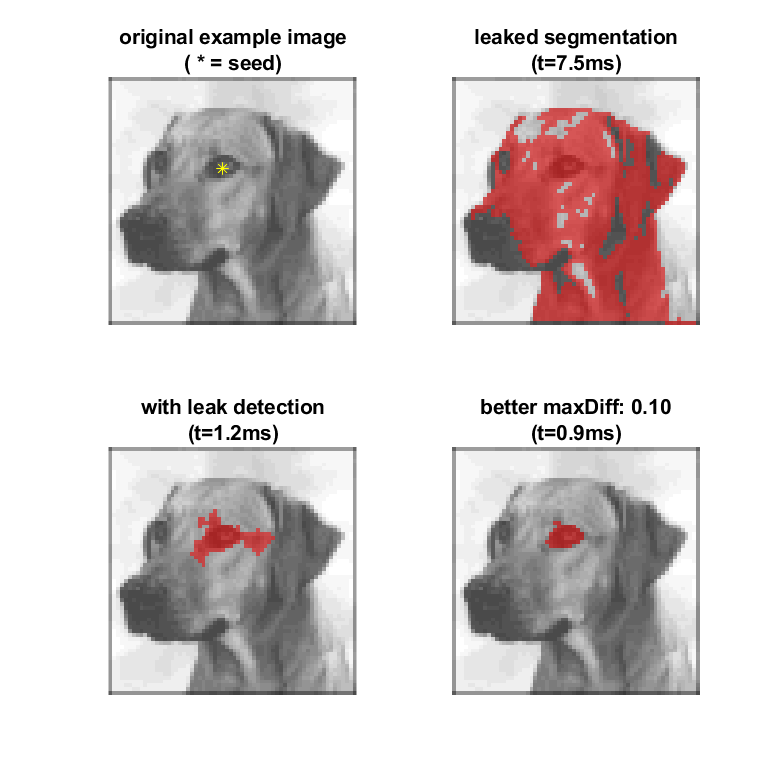

RegGrow
Region growing algorithm (supports 2D, 3D, and ND).
In each iteration, look at all voxels in the N-neighborhood of the already segmented region. From those voxels, add those that are within maxDiff of the mean of the region. Keep repeating the loop until no more pixels are added.
The default neighborhood is the minimal neighborhood (4 for 2D, 6 for 3D, 2*dims for ND) As an alternative to entering the neighborhood, a custom kernel can be entered as a binary matrix with the same number of dimensions as the input image.
This is slower than a mex implementation would be, but this should be compatible with any release and will return the same result on any release (including GNU Octave). /html
Contents
Syntax
result = RegGrow(I) result = RegGrow(I,maxDiff) result = RegGrow(I,maxDiff,seed) result = RegGrow(___,Name,Value) result = RegGrow(___,options) [result,OverflowFlag]=RegGrow(___)
Note: running without inputs runs on an example image.
Output arguments
| result | The result of the region growing. This will be a logical array of the same size as the input image. |
| OverflowFlag | A flag in case of overflow. See below for how to enable checking for an overflow. Normally this output should be false. |
Input arguments
| I | The image to use, which can be any data type that can be converted to a double. |
| maxDiff |
The maximum difference between the mean of the currently segmented pixels and candidate pixels that will be added. All candidate pixels are tested at the same time. This value is treated as an absolute value. If omitted, the default value is 2/3*std(I(:)).
This parameter must be a scalar double, or be convertable to one. |
| seed | The initial starting point of the algorithm. If omitted, the default value is the first pixel (linear index 1). |
| Name,Value | In addition to the previous parameters, the settings below can be entered with a Name,Value syntax. The parameter names are not case-sensitive. |
| options | Instead of the Name,Value, parameters can also be entered in a struct. Missing fields will be set to the default values. Field names are not case-sensitive. |
Name,Value pairs
| nHood |
The neighborhood that is checked. By default the minimal neighborhood is used (4-neighborhood for 2D images and 6-neighborhood for 3D images).
This setting is ignored if the kernel input is provided. |
| kernel |
The kernel input allows more flexibility in the direction of growth. This parameter must be a logical array or be convertible to one. Each dimension must have an odd length. The center pixel is set to true.
Note that is parameter describes the direction of growth and is therefore dissimilar to a convolution kernel (i.e. it is flipped along all directions). |
| overflow |
This parameter allows the detection of a segmentation leak. This allows the process to exit before it is complete if too many pixels are being segmented. A leak can cause the segmentation to take a very long time to complete, especially for 3D images.
If the segmented area or volume exceeds this value (counted as number of pixels or voxels), the second output is set to true and the function halts. No error or warning is triggered. |
| waitbar | Use a waitbar to show the progress of the region growing. The maximum value is either the overflow, or the total number of voxels. This means the waitbar shouldn't reach 100%, but does provide a visual indication of progress. The default is false for 2D input and true for higher dimensional input. |
| silent | This is the inverse of the waitbar switch, but it is ignored if wairbar is specified. It is provided to improve code readability. |
Example: Segment the background
The default example image is taken from the image generated by the image function. For the full back story, see this blog post. In GNU Octave this image is not available and it is replaced by a logo image. The example setup will still work as intended.
% Generate an image. if exist('OCTAVE_VERSION', 'builtin') IM = get(0,'DefaultImageCData');IM = IM/max(IM(:)); else defimage = pow2(get(0,'DefaultImageCData'),47); IM = bitshift(defimage,-37);IM = fix(IM); IM = bitand(IM,31);IM = IM/max(IM(:)); end % Call RegGrow without input to segment the background in the example image. mask=RegGrow; %fuse image and mask r_factor=0.5;[R,G,B]=deal(IM,IM,IM);R(mask)=r_factor+R(mask)*(1-r_factor);G(mask)=G(mask)/2;B(mask)=B(mask)/2;fused=cat(3,R,G,B); subplot(1,2,1),imshow(IM),title('original example image') subplot(1,2,2),imshow(fused),title('segmented background')

Example: Detect segmentation leak
opts=struct;
opts.seed=[24 30];
opts.maxDiff=0.15;
tic,r{1}=RegGrow(IM,opts);t1=toc;
opts.overflow=100;
tic,r{2}=RegGrow(IM,opts);t2=toc;
opts.overflow=[];opts.maxDiff=0.1;
tic,r{3}=RegGrow(IM,opts);t3=toc;
IM_=cell(1,3);
for n=1:3
%fuse image and mask
r_factor=0.5;[R,G,B]=deal(IM,IM,IM);R(r{n})=r_factor+R(r{n})*(1-r_factor);G(r{n})=G(r{n})/2;B(r{n})=B(r{n})/2;fused=cat(3,R,G,B);
IM_{n}=fused;
end
subplot(2,2,1),imshow(IM),title({'original example image','( * = seed)'})
hold on,plot(opts.seed(2),opts.seed(1),'y*'),hold off
subplot(2,2,2),imshow(IM_{1})
title({'leaked segmentation',sprintf('(t=%.1fms)',1000*t1)})
subplot(2,2,3),imshow(IM_{2})
title({'with leak detection',sprintf('(t=%.1fms)',1000*t2)})
subplot(2,2,4),imshow(IM_{3})
title({sprintf('better maxDiff: %.2f',opts.maxDiff),sprintf('(t=%.1fms)',1000*t3)})

Compatibility, version info, and licence
| Compatibility | Windows 10 | Ubuntu 20.04 LTS | MacOS 10.15 Catalina |
| ML R2020a | works | not tested | not tested |
| ML R2018a | works | works | not tested |
| ML R2015a | works | works | not tested |
| ML R2011a | works | works | not tested |
| ML 6.5 (R13) | works | not tested | not tested |
| Octave 5.2.0 | works | works | not tested |
| Octave 4.4.1 | works | not tested | works |
Version: 1.1
Date: 2020-07-06
Author: H.J. Wisselink
Licence: CC by-nc-sa 4.0 ( https://creativecommons.org/licenses/by-nc-sa/4.0 )
Email = 'h_j_wisselink*alumnus_utwente_nl';
Real_email = regexprep(Email,{'*','_'},{'@','.'})